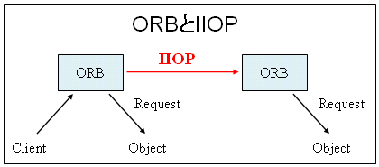
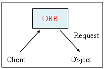
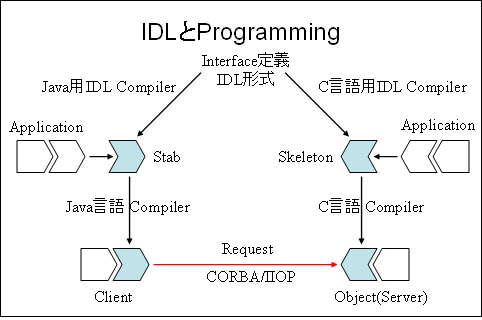
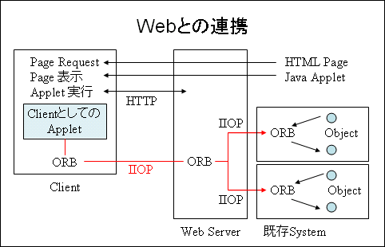

CORBA/IIOP
IIOPとは?
- Internet Inter-ORB Protocolの略
- OMG(Object Management Group)という業界団体が制定した、分散Object System用のProtocol
- OMGが1995年に発表した、CORBAのversion2の一部
- ORB(Object Request Broker)間のProtocol

ORBとは?
- Object Request Brokerの略
- ClientからのRequestをObjectに仲介する役割を果たす

ORBにおけるObjectとは?
- なんらかのRequestに応えて、特定の働きをするSoftwareの単位
例: MicorosoftのActiveX/OLE
CORBAとは?
- Common ORB Architectureの略
- ORB自体は、各種Platformに依存する(Windows上のOLE)
- CORBAは、あらゆるPlatformに共通なORBの仕様
なぜCORBA/IIOPなのか?
- InternetやIntranet上で、業務や商取引のApplicationを構築する動きが顕著にある
- 当初は、HTTP ProtocolとServer上のApplicationを、CGI(Common Gateway Interface)で組み合わせていた
→思ったほどの性能が出ない等、限界がある
HTTPとCGIの組み合わせにおける限界
Process生成
- CGIでは、ClientからのRequestごとにProcessが起動されるため、ServerのLoad Ave.が高くなる
- CORBA/IIOPでは、一つのProcessで複数のRequestを処理できる
Server負荷
- CGIでは、ClientからのすべてのRequestをWeb Serverが扱うので、一つのServerが性能上のBottleneckになる
- CORBA/IIOPでは、複数のMachineにObjectを配置し、負荷を分散できる
Data変換
- HTTPでは、Text以外のDataは互換性がないため、すべてのDataをHTML形式に変換しなければならない
- CORBA/IIOPでは、他のData型も自動的かつ効率的にMappingする
Transaction
- HTTP(1.0)には、Sessionの概念がない。複数のRequestにまたがるTransactionの管理ができない(Cookieなどの代替手段はある)
- CORBA/IIOPには、Sessionの概念がある
Network効率
- HTTP(1.0)では、RequestごとにTCP Connectionが生成・破棄されるため、Trafficが増加してしまう
- CORBA/IIOPでは、Connectionを維持できるため、Networkの利用効率と応答速度の両面で有利
CORBA/IIOPを利用すると?
- Network上に分散しているObjectが、あたかも自分のMachine上に存在しているかのように利用できる
- Networkに関する部分は、CORBA/IIOP準拠のORBが面倒をみてくれる
→Socket関数を知らなくてもよい
- Programmerから見えるのは、各Objectが持つ抽象的なInterfaceのみ
抽象的なInterfaceとは?
- IDL(Interface Definition Language)という記述言語で定義される
- IDL Compilerで自動的に翻訳される
- CORBA/IIOPでは、C, C++, Java, COBOL, Ada, SmalltalkをSupportしている
IDL Compilerとは?
- Interfaceの定義を特定のProgramming言語に変換するだけでなく、ORBとのやりとりに必要なModuleも自動生成する
- Programmerは、それらのModule群に含まれる関数を呼び出すことで、自分のProgramをCORBA/IIOP対応にできる
- Javaなら、Client側で5行程度、Object側で10行前後を追加・修正するだけ!

既存Systemとの統合
- CORBA/IIOPは、白紙からSystemをつくるのではなく、既存Systemを活用する方に適している
- 例えば、Java ClientがNetscape Communicator内のORBを経由してIIOPを使用し、企業のMain Frameで稼動しているCOBOLの在庫管理System内のObjectにAccessする、といったことが可能

製品の対応
- 1996年中盤に、Netscape社とOracle社が対応
- Netscape Navigatorには、すでに標準でIIOPがSupportされている
- Oracleは、NCA(Network Computing Architecture)にCORBA/IIOPを組み込んだ
- OMGには、IBM, Sun, DEC, HP, Appleなどが加盟している
参考
- 「INTERNET magazine」1997/10月号, Internet最新Technology: 第9回(p350)
- OMG http://www.omg.org/
- Netscape http://www.netscape.com/(リンク切れ)
- Oracle http://www.oracle.com/
- Sun http://developers.sun.com/(リンク切れ) http://java.sun.com/(リンク切れ)
Back to Top Page